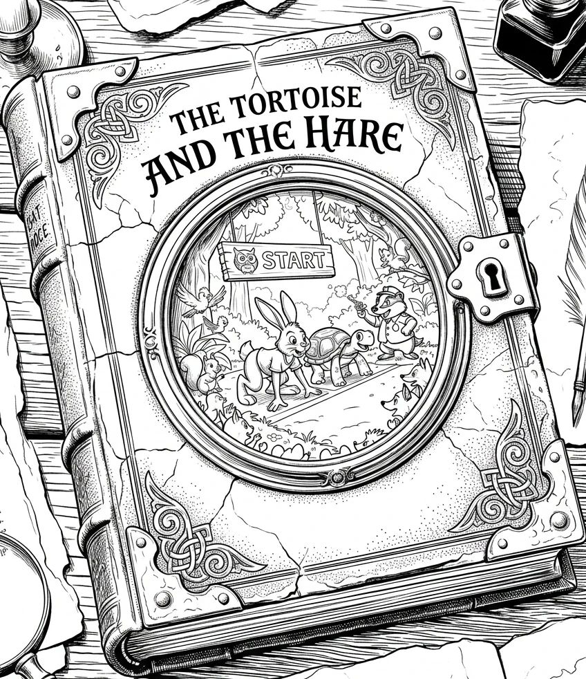

Read the example. Finish the second column. Build the third one yourself.

| Example · Wilderness & SurvivalRead this one. It is done for you. | Genre 1 · DystopianFinish the sentences. | Genre 2 · You choose it and write all of it. | |
|---|---|---|---|
| Tone & Atmospheretone · stakes · convention | The playful, fable-like tone shifts into a stark survival struggle. Freezing weather and real hunger replace cartoon whimsy, so the stakes become life and death. | The playful tone shifts into something and . Instead of a friendly race, the stakes are now . | |
| Setting & World Buildingaesthetic · motif | The sunny forest path becomes a frozen ridge above the treeline. The aesthetic turns to gray sky, wind-scoured rock, and tracks filling with snow. | The forest becomes a city. The aesthetic turns to concrete , red warning lights, everything dim and . | |
| Character Traitsmotivation · perspective · trope | The hare and the tortoise become weathered survivors, defined by endurance and instinct rather than cartoon silliness. Their motivation is no longer pride — it is getting off the mountain alive. | The hare becomes and the tortoise becomes . Their motivation is no longer pride — it is . | |
| Language & Syntaxvoice · diction · syntax | The repetitive, whimsical phrasing is replaced by clipped, minimalist syntax — sparse, muscular prose that mirrors the cold. The diction goes physical: frostbite, ration, shelter. | The whimsical phrasing is replaced by syntax. The diction turns cold and official — words like , , and . |